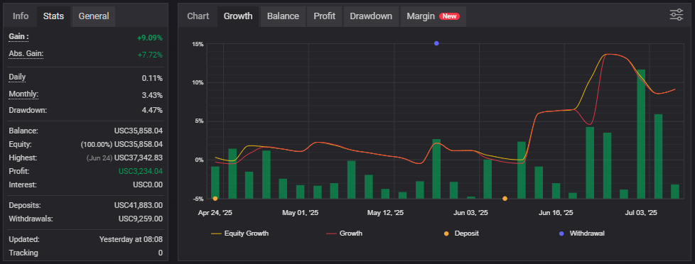

<div id="portfolio-page" class="portfolio-page-content">
    <div class="portfolio-page-wrapper">
        <div class="portfolio-page-nav">
            <div class="nav-item portfolio-page-prev-next">
                <a class="ajax-page-load" href="portfolio-project-website-tupen.html"><i class="lnr lnr-chevron-left"></i></a>
                <a class="ajax-page-load" href="portfolio-project-machine-learning.html"><i class="lnr lnr-chevron-right"></i></a>
            </div>
            <div class="nav-item portfolio-page-close-button">
                <a id="portfolio-page-close-button" href="#"><i class="lnr lnr-cross"></i></a>
            </div>
        </div>

        <div class="portfolio-page-title">
            <h1>Proyek Data Mining (Studi Kasus: <i>Datasets</i> Harga Rumah di Negara Amerika Serikat)</h1>
        </div>

        <div class="row">
            <div class="col-sm-8 col-md-8 portfolio-block">
                    <div class="owl-carousel portfolio-page-carousel">
                        <div class="item">
                            
                        </div>
                    </div>

                    <div>

                     <p class="deskripsi-tambahan">
                        Portofolio ini merupakan hasil dari aktivitas trading saya di pasar Forex yang dimulai sejak April 2025. Seluruh transaksi dilakukan berdasarkan trading plan yang telah dirancang dan diuji sebelumnya. Fokus utama portofolio ini adalah <b>menjaga konsistensi dan kedisiplinan dalam eksekusi, serta mendokumentasikan performa secara transparan untuk tujuan evaluasi dan pengembangan strategi jangka panjang.</b>
                    </p>

                    <p class="deskripsi-tambahan">
                        Sebagai trader, saya menetapkan target drawdown <b>maksimal di bawah 8%</b> untuk menjaga stabilitas modal dan mengontrol risiko. Selama periode berjalan, saya berhasil mempertahankan drawdown pada level rendah yaitu sekitar 4.47%, yang mencerminkan penerapan manajemen risiko yang ketat dan disiplin dalam mengikuti rencana trading yang telah dibuat.</b>
                    </p>

                    <p class="deskripsi-tambahan">
                        Hingga bulan Juli 2025, portofolio ini telah mencatatkan return sebesar +9.09%, dengan rata-rata pertumbuhan bulanan sekitar 3.43%. Portofolio ini juga sempat mencapai return tertinggi sebesar +13% pada bulan Juni 2025, menunjukkan potensi yang solid dalam kondisi pasar yang mendukung. <b>Kinerja ini dicapai tanpa mengorbankan prinsip pengendalian risiko</b>, yang menjadi fondasi utama dalam strategi trading saya.
                    </p>
                </div>

                <script type="text/javascript">
                    jQuery(document).ready(function($){
                        $('.portfolio-page-carousel').imagesLoaded(function(){
                            $('.portfolio-page-carousel').owlCarousel({
                                smartSpeed:1200,
                                items: 1,
                                loop: true,
                                dots: true,
                                nav: true,
                                navText: false,
                                margin: 10,
                                autoHeight:true
                            });
                        });
                    });
                </script>
            </div>

            <div class="col-sm-4 col-md-4 portfolio-block">
                <!-- Project Description -->
                <div class="project-description">
                    <div class="block-title">
                        <h3>Description</h3>
                    </div>
                    <ul class="project-general-info">
                        <li><p><i class="lnr lnr-user"></i>Nurlintang Asriono Sudarmawan</p></li>
                        <li><p><i class="lnr lnr-link"></i> <a href="https://www.myfxbook.com/members/Nurlintang/portofolio-nurlintang-asriono-sudarmawan/11485055" target="_blank"> Lihat Portfolio Forex Disini</a></p></li>
                        <li><p><i class="lnr lnr-calendar-full"></i> Hingga Saat ini</p></li>
                    </ul>

                    <p class="text-justify">Portofolio ini saya mulai sejak Maret 2025 dengan tujuan untuk mengevaluasi performa dari trading plan yang telah saya susun. Seluruh aktivitas trading dijalankan secara disiplin dan sepenuhnya berdasarkan trading plan tersebut.</p>
                    <!-- /Project Description -->

                    <!-- Technology -->
                    <div class="tags-block">
                        <div class="block-title">
                            <h3>Technology</h3>
                        </div>
                        <ul class="tags">
                            <li><a>Meta Trader 5</a></li>
                            <li><a>Trading View</a></li>
                        </ul>
                    </div>
                    <!-- /Technology -->

                    <!-- Skill -->
                    <div class="tags-block">
                        <div class="block-title">
                            <h3>Skill</h3>
                        </div>
                        <ul class="tags">
                            <li><a>Technical Analysis</a></li>
                            <li><a>Micro and Macro Economics</a></li>
                            <li><a>Risk Management</a></li>
                            <li><a>Trading Plan Management</a></li>
                        </ul>
                    </div>
                    <!-- /skill -->
                </div>
                <!-- Project Description -->
            </div>
        </div>
    </div>
</div>
